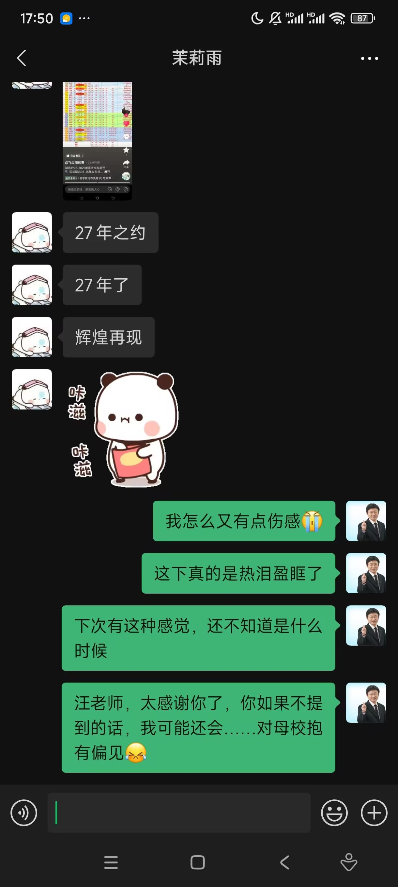
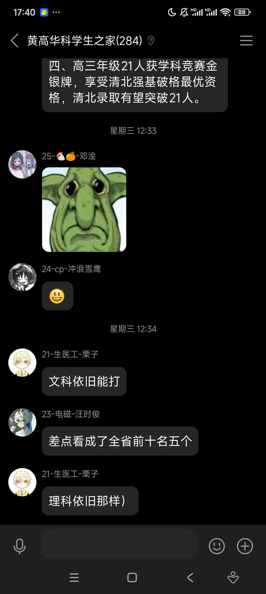
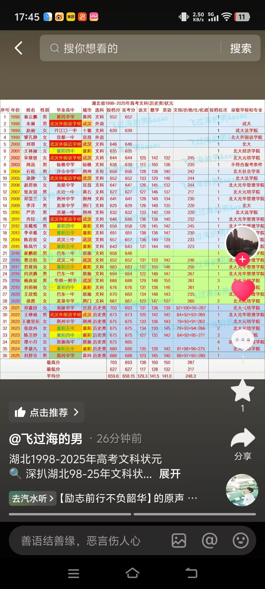
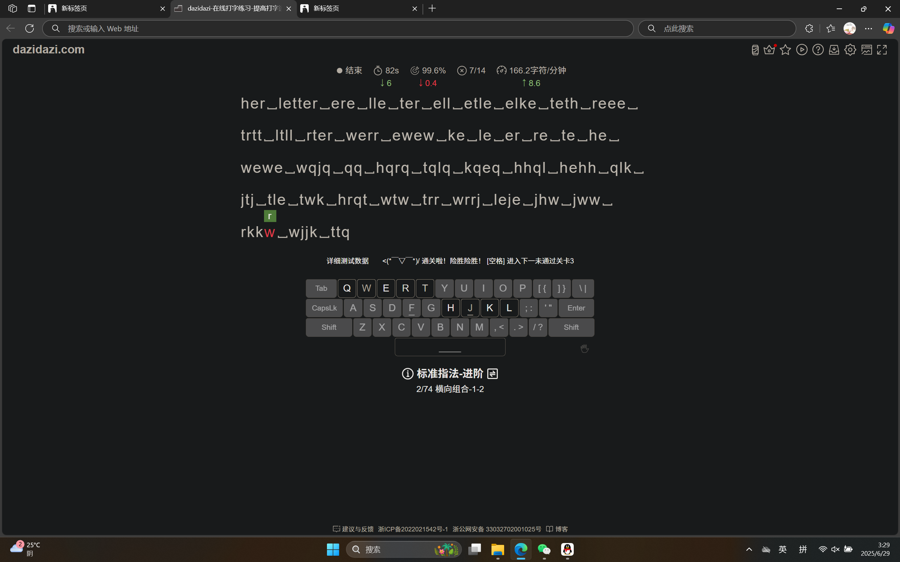

Journal · 2025-06-29
定位华中科技大学紫菘学生公寓5栋532
在不久的昨天下午，汪老师告诉我一个消息：时隔27年，母校文科，再度夺得，湖北省高考状元！
他提到“母校文科状元”，我竟不以为意，没想到“省状元”这个层次。对方越聊越兴奋，而我越想越伤感，“筚路蓝缕”的岁月真的太心酸了。
人生无法同时拥有青春和对青春的感受。也不知道这话是谁说的，但就是很有道理。去年的我，总以为“自己什么都懂”，认为“岁月静好”“诸事顺遂”。等到体育课期末考试时，着急忙慌地跟伙伴对练，在刘少园老师评分前，活生生地练出了“肌肉记忆”。真就是“顺水推猪”。
回到“省状元”的话题上，黄州府估计是太兴奋了，还不发公告。我目前只知道那个同学……高一学数学竞赛的……高二转去学历史。说真的，我突然间得知某个同学是搞“奥林匹克学科竞赛”的，一股敬畏之情不禁油然而生！他们以凡人之躯比肩神明！吾辈楷模啊！
想必黄州府的同志得知此事，都会鼻子一酸，喜慰不可言！下次有这种感觉，估计是在国家统一之时！
如果说黄州府的省状元是“27年之约”，那么“伯力庙街海参崴，台湾藏南钓鱼台”，又该等到何年何月？
天哪，我在期待啥？可能每到夜深人静，就会想到一些冷暖自知的旧事，忆起几个卑微倔强的故人。
时光轴记录
在不久的昨天下午，汪老师告诉我一个消息：时隔27年，母校文科，再度夺得，湖北省高考状元！
他提到“母校文科状元”，我竟不以为意，没想到“省状元”这个层次。对方越聊越兴奋，而我越想越伤感，“筚路蓝缕”的岁月真的太心酸了。
人生无法同时拥有青春和对青春的感受。也不知道这话是谁说的，但就是很有道理。去年的我，总以为“自己什么都懂”，认为“岁月静好”“诸事顺遂”。等到体育课期末考试时，着急忙慌地跟伙伴对练，在刘少园老师评分前，活生生地练出了“肌肉记忆”。真就是“顺水推猪”。
回到“省状元”的话题上，黄州府估计是太兴奋了，还不发公告。我目前只知道那个同学……高一学数学竞赛的……高二转去学历史。说真的，我突然间得知某个同学是搞“奥林匹克学科竞赛”的，一股敬畏之情不禁油然而生！他们以凡人之躯比肩神明！吾辈楷模啊！
想必黄州府的同志得知此事，都会鼻子一酸，喜慰不可言！下次有这种感觉，估计是在国家统一之时！
如果说黄州府的省状元是“27年之约”，那么“伯力庙街海参崴，台湾藏南钓鱼台”，又该等到何年何月？
天哪，我在期待啥？可能每到夜深人静，就会想到一些冷暖自知的旧事，忆起几个卑微倔强的故人。




Just yesterday afternoon, Teacher Wang told me some news: after twenty-seven years, my old school's humanities track had once again produced Hubei Province's top scorer in the gaokao!
When he mentioned “my old school's humanities top scorer,” I thought nothing of it, never imagining the level of a “provincial top scorer.” The more excited he became as we talked, the sadder I felt — those years of “blazing a trail through the wilderness” were truly too bitter.
One cannot possess youth and the feeling of youth at the same time. I don't know who said that, but it makes perfect sense. Last year, I always thought “I understood everything,” that “the years were peaceful” and “everything went smoothly.” Then, when the final PE exam arrived, I hurriedly practiced with my partner and, before Teacher Liu Shaoyuan graded us, I literally drilled the movements into “muscle memory.” It really was “pushing a pig along with the current.”
Back to the topic of the “provincial top scorer,” Huangzhou Prefecture must be too excited, as it still has not posted an announcement. For now, all I know is that student… studied for a math olympiad in the first year of high school… then switched to history in the second year. Honestly, the moment I suddenly learned that a classmate competes in an “academic olympiad,” a feeling of awe welled up in me! In mortal bodies they stand shoulder to shoulder with the gods! A model for our generation!
I imagine the comrades of Huangzhou Prefecture must have felt a sting in their noses when they heard the news, with joy and consolation beyond words! The next time I feel something like that will probably be when the country is reunified!
If Huangzhou Prefecture's provincial top scorer was a “twenty-seven-year appointment,” then how many years and months must we wait for “Boli, Miaojie, Haishenwai; Taiwan, Zangnan, Diaoyutai”?
My God, what am I even looking forward to? Perhaps whenever the night grows deep and quiet, I think of old stories whose warmth and cold only I know, and remember a few humble, stubborn people from the past.
Pas plus tard qu'hier après-midi, le professeur Wang m'a annoncé une nouvelle : après vingt-sept ans, la filière littéraire de mon ancien lycée avait de nouveau produit le meilleur candidat du Hubei au gaokao !
Quand il a parlé du « meilleur élève littéraire de notre ancien lycée », je n'y ai guère prêté attention, sans imaginer qu'il s'agissait du « premier de la province ». Plus mon interlocuteur s'enthousiasmait au fil de la conversation, plus je devenais triste ; ces années passées à « ouvrir une route à travers les broussailles » ont vraiment été trop amères.
On ne peut pas posséder à la fois la jeunesse et le sentiment de la jeunesse. Je ne sais pas qui a dit cela, mais c'est parfaitement juste. L'an dernier, je croyais toujours « tout comprendre », que « les années étaient paisibles » et que « tout se passait bien ». Puis, quand l'examen final d'éducation physique est arrivé, je me suis entraîné à la hâte avec mon partenaire et, avant que le professeur Liu Shaoyuan ne nous évalue, j'ai réussi à forcer les mouvements jusqu'à la « mémoire musculaire ». C'était vraiment « pousser un cochon dans le sens du courant ».
Pour revenir au sujet du « premier de la province », la préfecture de Huangzhou doit être trop excitée, car elle n'a toujours pas publié d'annonce. Pour l'instant, je sais seulement que cet élève… faisait des olympiades de mathématiques en première année de lycée… puis est passé à l'histoire en deuxième année. Franchement, dès que j'apprends soudain qu'un camarade participe à une « olympiade disciplinaire », une profonde admiration monte spontanément en moi ! Dans un corps de mortel, ils se tiennent à l'égal des dieux ! Un modèle pour notre génération !
J'imagine que les camarades de la préfecture de Huangzhou ont dû sentir leur nez picoter en apprenant la nouvelle, dans une joie et une consolation impossibles à exprimer ! La prochaine fois que j'éprouverai une telle sensation, ce sera sans doute au moment de la réunification du pays !
Si le premier de la province de la préfecture de Huangzhou était un « rendez-vous après vingt-sept ans », combien d'années et de mois faudra-t-il encore attendre pour « Boli, Miaojie, Haishenwai ; Taïwan, Zangnan, Diaoyutai » ?
Mon Dieu, qu'est-ce que j'attends au juste ? Peut-être qu'à chaque fois que la nuit devient profonde et silencieuse, je repense à de vieilles histoires dont moi seul connais la chaleur et le froid, et me souviens de quelques modestes et obstinées connaissances d'autrefois.
Erst gestern Nachmittag erzählte mir Lehrer Wang eine Neuigkeit: Nach 27 Jahren hatte der geisteswissenschaftliche Zweig meiner alten Schule erneut den besten Gaokao-Absolventen der Provinz Hubei hervorgebracht!
Als er vom „besten Geisteswissenschaftler unserer alten Schule“ sprach, dachte ich mir nichts dabei und kam gar nicht darauf, dass er den „Besten der ganzen Provinz“ meinte. Je begeisterter mein Gegenüber im Gespräch wurde, desto trauriger wurde ich – die Jahre, in denen wir „durch Gestrüpp einen Weg bahnten“, waren wirklich bitter.
Man kann nicht zugleich die Jugend und das Empfinden für die Jugend besitzen. Ich weiß nicht, wer das gesagt hat, aber es stimmt einfach. Im letzten Jahr glaubte ich immer, „alles zu verstehen“, und dachte, „die Jahre seien friedlich“ und „alles verlaufe glatt“. Als dann die Abschlussprüfung im Sportunterricht anstand, übte ich hektisch mit meinem Partner und trainierte mir noch vor der Bewertung durch Lehrer Liu Shaoyuan mit Gewalt ein „Muskelgedächtnis“ an. Das war wirklich ein Fall von „ein Schwein mit der Strömung schieben“.
Zurück zum Thema „Provinzbester“: Die Präfektur Huangzhou ist vermutlich viel zu aufgeregt und hat deshalb noch immer keine Bekanntmachung veröffentlicht. Bisher weiß ich nur, dass dieser Schüler … im ersten Oberschuljahr an Mathematikolympiaden teilnahm … und im zweiten Jahr zu Geschichte wechselte. Ehrlich gesagt: Sobald ich plötzlich erfahre, dass ein Mitschüler an einer „Facholympiade“ teilnimmt, steigt ganz von selbst tiefe Ehrfurcht in mir auf! Mit sterblichem Körper stehen sie den Göttern ebenbürtig gegenüber! Ein Vorbild unserer Generation!
Vermutlich bekamen die Genossen der Präfektur Huangzhou bei dieser Nachricht einen Stich in der Nase, und ihre Freude und ihr Trost ließen sich nicht in Worte fassen! Das nächste Mal werde ich so etwas vermutlich bei der Wiedervereinigung des Landes empfinden!
Wenn der Provinzbeste der Präfektur Huangzhou eine „Verabredung nach 27 Jahren“ war, wie viele Jahre und Monate müssen wir dann noch auf „Boli, Miaojie, Haishenwai; Taiwan, Zangnan, Diaoyutai“ warten?
Mein Gott, worauf warte ich da eigentlich? Vielleicht denke ich jedes Mal, wenn die Nacht tief und still wird, an alte Geschichten zurück, deren Wärme und Kälte nur ich selbst kenne, und erinnere mich an einige bescheidene, eigensinnige Menschen von früher.